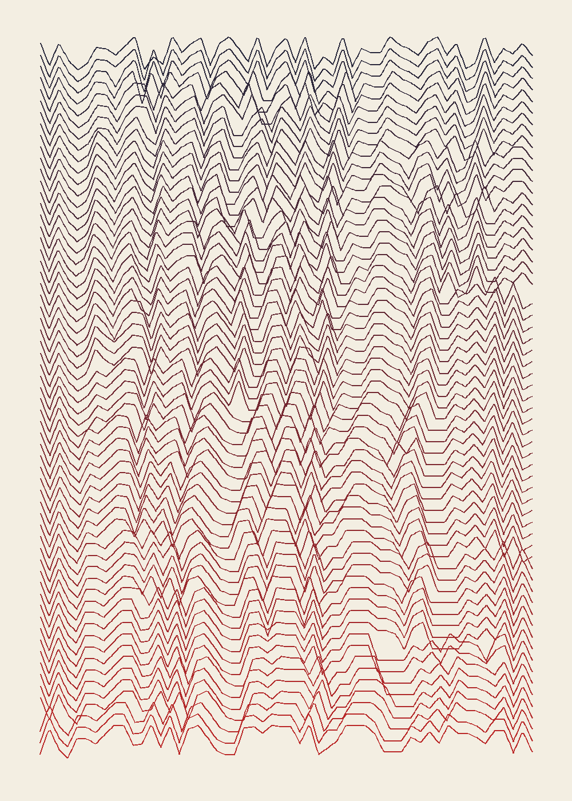

The same sixty-one generations as Sixty Scribes, each drawn as a line: every letter's height is its character code mod 32. Top is the sentence as I wrote it. The dropped letters shift everything left of them, so the ridges slide; the doubled ones make plateaus. Unlike Copied Badly, this decay has a shape to lose.
Code: works/2026-10-07l-sentence-lines/make.py.